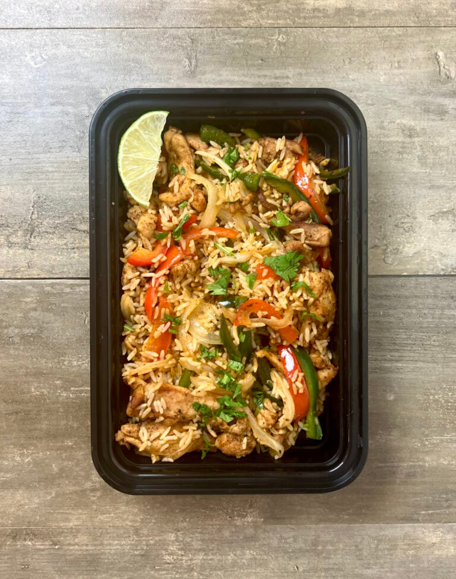

Chicken Fajita Fried Rice

This Chicken Fajita Fried Rice is packed with flavor and is close to a perfect meal prep recipe
in my eyes. It is made using marinated chicken thighs, rice, and fajita vegetables that reheats
well and stores great in the fridge.
Ingredients
The ingredients are as follows:
For the chicken
- 2 lbs (908 g) boneless skinless chicken thighs
- 2 tbsp (30 g) oil
- 1 tbsp (15 g) lime juice
- 2 tsp (6 g) garlic powder
- 1 tsp (1 g) oregano
- 1 tsp (3 g) coriander
- 1 tsp (3 g) cumin
- 1 tsp (3 g) paprika
- 2 tsp (6 g) chili powder
- 1 tsp (6 g) salt
- 1 tsp (2 g) pepper
- 1 ½ teaspoons salt, divided, or to taste
For the vegetables and rice
- 3 cups (450 g) cooked rice
- 1 medium (200 g) onion
- 1 medium (150 g) red pepper
- 1 medium (150 g) green pepper or poblano
- 1 tbsp (15 g) minced garlic
- 2 tbsp (30 g) lime juice
- salt and pepper to taste
- 1 tbsp (15 g) oil
- ¼ cup cilantro optional for garnish
- 1 lime optional for garnish
Steps
- Gather all your ingredients.
- Cook sausage, ground beef, onion, and garlic in a Dutch oven over
medium heat until well browned.
- Stir in crushed tomatoes, tomato sauce, tomato paste, and water.
Season with sugar, 2 tablespoons parsley, basil, 1 teaspoon salt,
Italian seasoning, fennel seeds, and pepper. Simmer, covered, for
about 1 1/2 hours, stirring occasionally.
- Bring a large pot of lightly salted water to a boil. Cook lasagna
noodles in boiling water for 8 to 10 minutes. Drain noodles, and
rinse with cold water.
- In a mixing bowl, combine ricotta cheese with egg, remaining 2
tablespoons parsley, and 1/2 teaspoon salt.
- Preheat the oven to 375 degrees F (190 degrees C).
- To assemble, spread 1 1/2 cups of meat sauce in the bottom of a
9x13-inch baking dish. Arrange 6 noodles lengthwise over meat sauce.
Spread with 1/2 of the ricotta cheese mixture. Top with 1/3 of the
mozzarella cheese slices. Spoon 1 1/2 cups meat sauce over mozzarella,
and sprinkle with 1/4 cup Parmesan cheese
- Repeat layers, and top with remaining mozzarella and Parmesan cheese.
Cover with foil: to prevent sticking, either spray foil with cooking
spray or make sure the foil does not touch the cheese.
- Bake in the preheated oven for 25 minutes. Remove the foil and bake
for an additional 25 minutes.
- Rest lasagna for 15 minutes before serving.